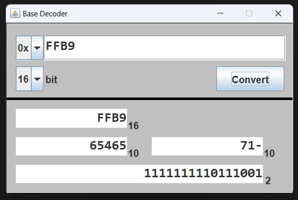

Base Decoder
This project is about converting numbers to different representations.
I used Java, and completed it while learning about topics in class such as two's complement and how computers represent numbers.
This project is about converting numbers to different representations.
I used Java, and completed it while learning about topics in class such as two's complement and how computers represent numbers.
I implemented a hashmap in C, which uses a binary-search tree to handle collisions.
Learning about binary search trees in one class and C in another gave me the idea to start this project.